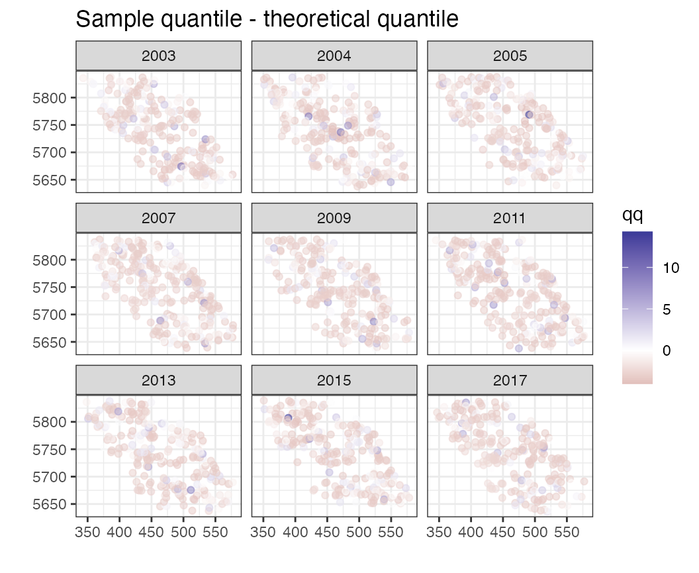
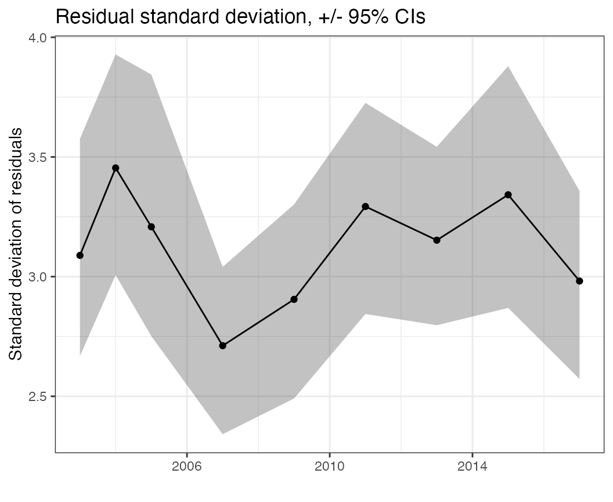

Here we will use the vista package visualize output from spatiotemporal models
Data
Each of the functions in the vista package takes a
generic data frame as an argument. As some examples, we can fit models
to the pcod example dataset from Pacific cod in the
sdmTMB package, collected by Fisheries and Oceans
Canada.
1. sdmTMB
sdmTMB is a package for fitting generalized linear mixed models (GLMMs) with spatial and spatiotemporal Gaussian random fields. The package can be installed here,
remotes::install_github("pbs-assess/sdmTMB")
library(sdmTMB)
data(pcod)We fit a fairly simple spatiotemporal model, using an example from the package. Don’t worry about all the arguments – the density of Pacific cod is modeled as a function of fixed effects (years) and spatiotemporal random fields (essentially different spatial maps in each year). The response is modeled with a Tweedie distribution.
mesh <- make_mesh(pcod, c("X", "Y"), cutoff = 15)
m <- sdmTMB(
data = pcod,
formula = density ~ 0 + as.factor(year),
time = "year",
mesh = mesh,
family = tweedie(link = "log"),
spatial = "off"
)Next, we can calculate the residual and predicted values from the fitted model
2. generalized additive models (GAMs) in mgcv
library(mgcv)
m <- gam(density ~ 0 + as.factor(year) + s(X, Y, by = as.factor(year)),
data = pcod, family = tw()
)Again, calculate the residual and predicted values
3. random forest models
library(randomForest)
m <- randomForest(density ~ year + X + Y + X:Y, data = pcod)Objects of class randomForest can be used with the
predict function, but because these are non-parametric methods, some of
the plots in the vista package (specifically those focused
on residuals) won’t work.
pcod$pred <- predict(m)Types of plots
We can use the vista package to generate diagnostic
plots. Each plot can be run individually. Some example functions are
below (illustrating how to use them with our pcod example above):
# Look at all predictions over space, faceted by time (or not)
pred_space(df = pcod, time = "year")
# Look at all predictions time
pred_time(df = pcod, time = "year")
# Look at residuals over space, faceted by time (or not)
resid_space(df = pcod, time = "year")
# Look at all residuals over time
resid_time(df = pcod, time = "year")
# Look at variation in residuals through time
sd_resid_time(df = pcod, time = "year")
# Look at variation in residuals across space, faceted by time (or not)
sd_resid_space(df = pcod, time = "year")
# Look at qq plots, faceted by time (or not)
qq(df = pcod, time = "year")
# Look at qq plots over space, faceted by time (or not)
qq_space(df = pcod, time = "year")
# Look at predictions vs residuals, faceted by time (or not)
pred_resid(df = pcod, time = "year")
# Look at time series of Moran statistics (e.g. residuals, predicted values)
moran_ts(df = pcod, time = "year")Examples
As an alternative to generating plots individually with specific functions, we can call the wrapper function to run all plots. This is a lot more convenient, and returns a list of ggplot() objects.
plots <- diagnostic_plots(pcod, time = "year")We can inspect the plots individually, e.g.
names(plots)## [1] "pred_space" "pred_space_bytime" "pred_time"
## [4] "resid_space" "resid_space_bytime" "resid_time"
## [7] "sd_resid_time" "sd_resid_space" "qq"
## [10] "qq_time" "qq_space" "pred_resid"
## [13] "moran_pred" "moran_resid" "scale_loc"
## [16] "scale_loc_time"Or look at them individually. For example we can look at the residuals spatially, and across time slices with
plots$resid_space_bytime
This may not be informative (because residuals are often on different scales). Instead we can look at the randomized quantile residuals,
plots$qq_space
Some plots are specific to particular models. For example, looking at the mean residuals over space, all values are 0 because each row of the dataframe has a unique (X,Y) coordinate – as opposed to repeat sampling at fixed stations.
The standard deviation of residuals over time seems to maybe suggest higher variability earlier in the time series, but not a trend in the variation over time
plots$sd_resid_time
Additional statistics (such as the Moran statistic) can be used to diagnose lingering spatial autocorrelation. These plots can be made on the predictions (where we expect there to be spatial autocorrelation)
plots$moran_pred
or on the residuals, where we hope there is little residual autocorrelation (because our spatial model is explaining away most of it).
plots$moran_resid